Deloitte Cyber Job Simulation Write Up
June 13, 2025
This write-up is part of my ongoing write-up series, exploring cybersecurity challenges, and threat intelligence practices utilised in the day-to-day operations of a threat analyst.
1. Introduction
A major news publication has revealed sensitive private information about Daikibo Industrials, our client. A production problem has caused its assembly lines to stop, threatening the smooth operation of supply chains relying on Daikibo’s products. The client suspects the security of their new status board may have been breached.
1.1 Scope
This investigation will aim to answer the following questions:
• Is there a way for a hacker to access Daikibo's manufacturing status dashboard directly from the internet?
• Are there any suspicious requests or long sequences of user requests?
• What are the indicators of automated requests?
• What is the ID of the user that is making the suspicious requests?
2. Is there a way for a hacker to access Daikibo's manufacturing status dashboard directly from the internet?
Tools Used
• web_activity.log: a log file containing data pertaining to the alleged breach.
• Visual Studio Code: an IDE to assist in analysing the log file
To answer this question, it was important to begin analysing the activity within the logs to gather some information with regards to how the Daikibo Industrials dashboard has been implemented.
Utilising IP address 192.168.0.50 as an initial reference point, it is clear that each user must log into the dashboard with authorised credentials, which then allows them access to the dashboard. I can observe the primary GET request, with the status assigned as 401 (UNAUTHORIZED), however, once the correct credentials have been provided, the user successfully logs in. This is denoted by the new 200 (SUCCESS) status.
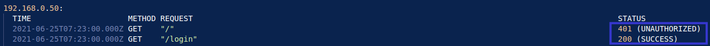
Once the user has logged in using their credentials, I notice that they are assigned an authorised user ID. For IP 192.168.0.50, this user ID is 5Eckr4DTaLLDaDMGqmMJ3g.
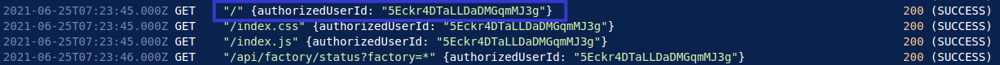
This user, now authorised, can access the dashboard and make API requests to the status of their manufacturing plants.
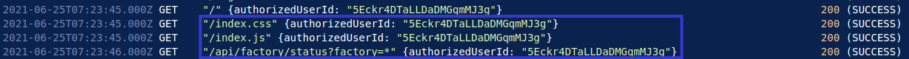
Exploring the networking elements further, I notice that all IP addresses begin with the same internal subnet structure: 192.168.0.x. This structure is important to note, as these IP addresses would only be assigned to devices that are directly connected to the internal network (the call is coming from inside the house! ☎️). This heavily suggests that in order to gain access to the dashboard, the threat actor must already be within the internal network. Due to this, it is not possible for the threat actor to have accessed the dashboard directly from the Internet.
I can now conclude that the process to gain access to Daikibo's manufacturing status database requires:
• valid log-in credentials, and
• an internal IP address in the subnet 192.168.0.x
These findings help support my hypothesis that the threat actor did not access Daikibo's dashboard from the Internet, but rather from the internal network (perhaps a disgruntled insider, or phishing? 👀). As such, this answers the first question in the investigation.
3. Are there any suspicious requests or long sequences of user requests?
Tools Used
• web_activity.log
• Visual Studio Code
When scrolling through the log file using Visual Studio Code, I noticed in the right-hand side overview panel, there is a section with many requests that seems unusual for the typical pattern of behaviour from Daikibo employees.
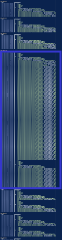
When examining the pattern of behaviour from a regular employee, it is evident that each user typically logs in using their credentials, subsequently being assigned an authorised ID. They then access the dashboard and execute multiple API calls to obtain the status of specific machines or plants. In the below example, we can see that IP address 192.168.0.38 logs in, and obtains the user ID irHRppZK35peUiTjxPuCdL. This user then requests the status of the Seiko plant, and the Laser Welder machine at the Seiko plant. This is the last request from this user.
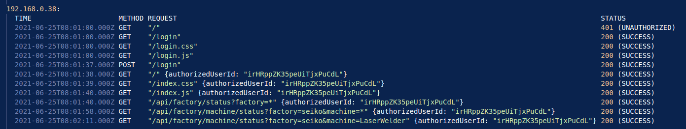
Analysing another, longer log, a similar patterns is observed.
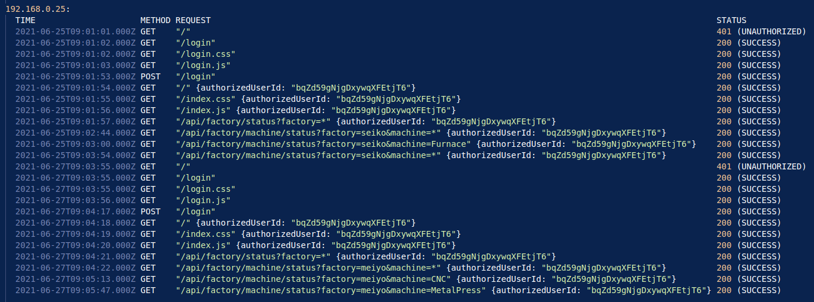
In this example, 192.168.0.25 logs in with their credentials, obtaining the user ID bqZd59gNjgDxywqXFEtjT6. This user makes multiple API requests to the dashboard, requesting the status of the Seiko plant and machines at this plant. This user returns at 9:03:55AM on the 27th, and is required to log-in again, as their credentials have now expired. Once this is validated, the user then proceeds to make more API requests on more machines at the Meiyo plant.
This makes the long requests in the overview panel seem quite suspicious. Inspecting these logs further, I can see that there are a total of 69 unauthorised API requests made from IP address 192.168.0.101.
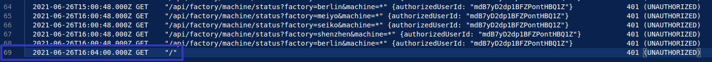
This confirms the presence of suspicious user requests, and despite the users log-in credentials expiring at exactly 12:00AM on June 26th, 2021, the user was still able to make API requests.
4. What are the indicators of automated requests?
Tools Used
• web_activity.log
• Visual Studio Code
When analysing logs for automated requests, I often find the timestamps of the logs to be the most telling. Using this approach, it is clear that for each of the four plants owned by Daikibo, an API request was made for the status of each, every hour, on the hour from the IP address 192.168.0.101.
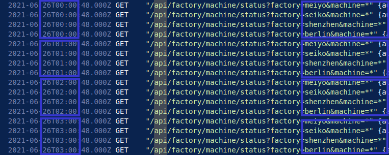
At exactly 0x:00:48, an API request is made at all four Daikibo plants which continues until the threat actor logs in again at 4:04PM on June 26th, 2021.
This behaviour implies clear automation, as it is highly unlikely that a person would be making these requests, every hour at each plant to the millisecond. This implies that the threat actor was able to gain access to legitimate credentials, perhaps through phishing or a disgruntled employee, and set up an automated script to scrape status information from Daikibo's plants.
At 4:04PM, the threat actor notices that they are making unauthorised requests, and logs in again which succeeds.
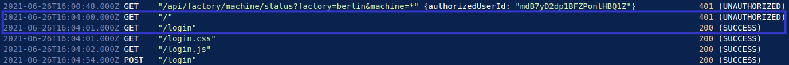
Once logged in again, the script proceeds to make successful API requests every hour, until 9:00PM on June 26th, 2021, where the logs end.
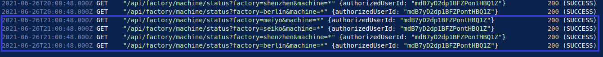
By analysing the timestamps of each of the requests from June 25th to the 26th, I was able to observe repeat, uniform requests made from the same IP address. This, in conjunction with the requests changing to unauthorised when the log-in credentials expired, imply that the threat actor was running a script in the background. It wasn't until 4:04PM on the 26th that the threat actor realised their requests were not successful, thus prompting them to login a second time where the script then makes more API requests until the logs end.
5. What is the ID of the user that is making the suspicious requests?
Tools Used
• web_activity.log
• Visual Studio Code
Due to the formatting of the loggs provided by the client, I can view each user ID assigned to each IP address. In this case, the ID assigned to 192.168.0.101 is mdB7yD2dp1BFZPontHBQ1Z.
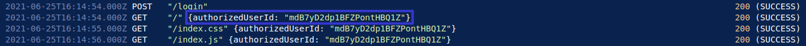
6. Conclusion
Based on my findings, the internal IP address used to first login implies that the threat actor had access to the internal network. Using legitimate login credentials during initial login indicates that the threat actor had successfully gained access to Daikibo's internal network. This threat actor was then able to deploy an automated script, scraping data from Daikibo's plants, executing API requests every hour between 12:00AM and 4:00PM on the 26th. After detecting that their requests were no longer authorised, the threat actor reauthenticates, reducing suspicion, and resumes scraping data from 5:00PM to 9:00PM that same day. A focused investigation into both the IP address 192.168.0.101 and the user ID mdB7yD2dp1BFZPontHBQ1Z may provide further insights into how access was initially obtained. This investigation could include device-level analysis through MAC address mapping, and an internal review of phishing or credential harvesting attempts.